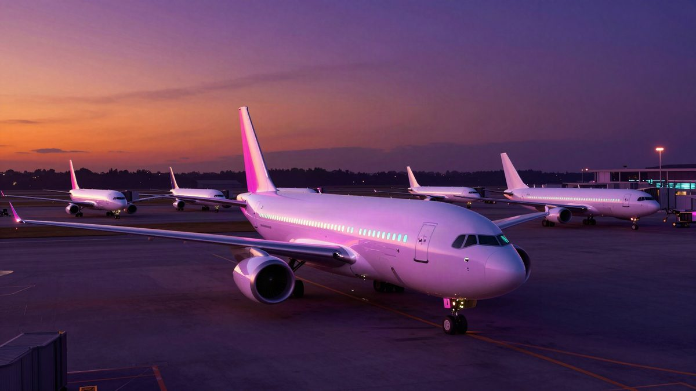

SAD su zaustavile sve domaće letove više od četiri sata: otkazano preko 5.100 letova, Duffy traži 50 milijardi dolara

FAA je u petak zbog kvara u telekomunikacijskom sustavu zračnog prometa zaustavila polaske svih domaćih letova u SAD-u na više od četiri sata. Prema FlightAwareu otkazano je 5117 letova, a Cirium procjenjuje da je zapelo oko 1,5 milijuna putnika. Ministar prometa Sean Duffy krivi preopterećene routere i staru opremu te traži 50 milijardi dolara za novi sustav, a kibernetički napad navodno se isključuje.
Američka savezna uprava za zrakoplovstvo (FAA) izdala je u petak oko 16 sati po istočnom vremenu rijetku naredbu kojom su zaustavljeni polasci svih domaćih letova u SAD-u. Ground stop trajao je više od četiri sata, a zatim je ukinut. Razlog je kvar u telekomunikacijskom sustavu zračnog prometa. Ti podaci obuhvaćaju cijeli dan, a ne samo vrijeme nakon naredbe. Analitička tvrtka Cirium procjenjuje da je zbog otkazivanja zapelo oko 1,5 milijuna putnika.
Uzrok: preopterećeni routeri
Ministar prometa Sean Duffy rekao je da su routeri bili preopterećeni podacima i počeli davati nedosljedne podatke, pa je sustav ugašen. Nestabilnost se, kaže, pojavila u radarskim i komunikacijskim centrima diljem zemlje. Neki routeri su zamijenjeni tijekom njegova mandata, ali je otkazala stara oprema.
Ministar domovinske sigurnosti Markwayne Mullin opisao je kvar kao posljedicu ugrađivanja nove tehnologije u postojeći stari sustav, što je preopteretilo stariji dio. Zatražio je „potpunu obnovu” tehnoloških sustava FAA-e.
Mullin kaže da nema nikakvih dokaza o kibernetičkom napadu i da kvar nema veze s ovotjednim padom Microsoftovih usluga.
Traži se 50 milijardi dolara
Duffy je pozvao Kongres da odobri hitno financiranje od 50 milijardi dolara za novi sustav kontrole zračnog prometa, umjesto ranije traženih više od 30 milijardi. Ministarstvo prometa najavilo je 2025. izgradnju novog sustava do 2028., procijenjenu na oko 31,5 milijardi dolara. Više od 12 milijardi osigurano je donošenjem zakona One Big Beautiful Bill Act, a Duffy to naziva djelomičnim financiranjem.
Posljedice za putnike
U trenutku naredbe u zraku je bilo više od 3.500 zrakoplova. Do kraja ograničenja u zračnom prostoru ih je bilo manje od 400, jer su sletjeli (slijetanje). Zračnim lukama je nestajalo gateova i prostor za parkiranje. Zračna luka Ronald Reagan u Washingtonu navodno više nije mogla primati preusmjerene letove.
Duffy kaže da će povratak u normalu biti spor i ovisiti o raspoloživim posadama. Prednost će imati zrakoplovi s više putnika. Očekuje da će se letovi od subote odvijati bolje, a promet za Dan zahvalnosti, za dva tjedna, po njegovim riječima neće biti ugrožen.
JetBlue i Air Canada otkazali su preostale letove tog dana, a JetBlue očekuje otkazivanja i u subotu. Zahvaćeni su i letovi iz Azije: noćni letovi iz Seula kasnili su do dva sata, a Delta je otkazala let iz Hong Konga za Los Angeles.
Eurocontrol je na zahtjev FAA-e do ponoći po istočnom vremenu obustavio sve polaske prema SAD-u iz svojih 42 zemlje članice. Letovi iz SAD-a prema Europi mogli su ići uz odobrenje FAA-e.
Izvor: Reddit r/technology